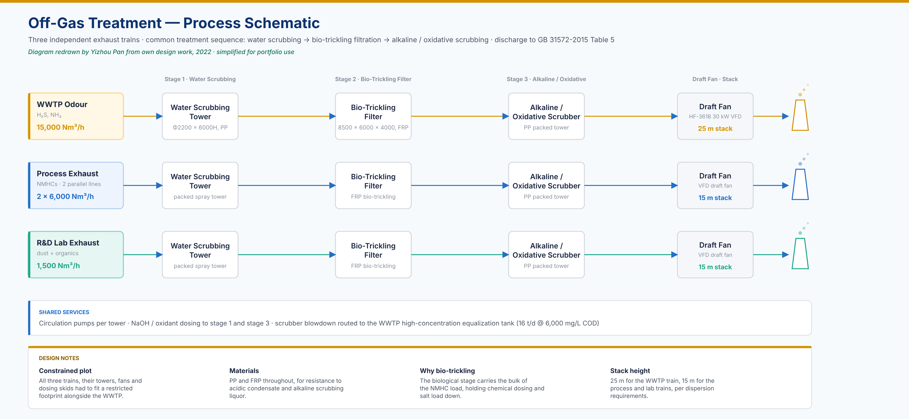

Wastewater TreatmentOff-Gas ControlPLA / Chemical IndustryEnvironmental Engineering
PLA Production Wastewater & Off-Gas Treatment Plant Design
Integrated wastewater & off-gas treatment facility for a polylactic acid (PLA) resin plant, eastern China
Design Institute: Zhejiang University Energy Engineering Design & Research Institute · June 2022
667
Design Flow
m³/day
>98%
COD Removal
6,000 → <60 mg/L
GB
Standard
31572-2015 T.1
1
Project Background & Wastewater Characteristics
Wastewater Sources & Parameters
Design composite influent
Value
Design flow
667 t/d
CODCr
≤ 6,000 mg/L
BOD₅
~ 3,000 mg/L
NH₃-N
≤ 90 mg/L
TN / TP
≤ 120 / ≤ 10 mg/L
SS
≤ 800 mg/L
The composite stream combines process condensates, scrubber blowdown, equipment and floor
washings, cooling blowdown and recycled RO concentrate. The governing design challenge is a
low B/C ratio: PLA oligomers and lactide residues hydrolyse slowly, so a
conventional activated-sludge train alone cannot reach the discharge limit — hence the
hydrolysis-acidification stage ahead of the biological units and RO polishing at the tail.
Effluent Discharge Standard (GB 31572-2015 Table 1)
CODCr
≤60
mg/L
BOD₅
≤20
mg/L
NH₃-N
≤8
mg/L
TN
≤40
mg/L
TP
≤1.0
mg/L
SS
≤30
mg/L
pH
6–9
—
Route
Indirect
to municipal
Off-Gas Treatment Overview
WWTP odour (H₂S, NH₃)15,000 Nm³/h
Process exhaust (NMHCs) × 2 lines2 × 6,000 Nm³/h
R&D lab exhaust (dust + organics)1,500 Nm³/h
All streams treated by water scrubbing → bio-trickling filter → alkaline/oxidative scrubbing.
Discharge via 15–25 m stacks, complying with GB 31572-2015 Table 5.
— Four deliverables as junior engineer in the project team
Contribution 01
P&ID Piping Design
Produced piping and instrumentation diagrams for the full wastewater treatment train.
Responsibilities included pipe sizing, material selection for acid/alkali resistance,
valve and instrumentation placement, and control loop identification across all units
(equalization tanks through RO system).
Key Design Info
Scope
All treatment units
Pipe material
PP / 304SS / HDPE
Design std
HG/T 20519
Instruments
pH, DO, ORP, MLSS
Deliverable
P&ID drawings
Contribution 02
Off-Gas Treatment System Layout
Designed equipment arrangement drawings for three independent exhaust treatment systems.
Each train comprises spray towers, bio-trickling filter, secondary scrubber, draft fan,
circulation pumps, and dosing system. Key challenge: fitting WWTP 15,000 Nm³/h
+ 2×6,000 Nm³/h process lines within constrained plot.
System Parameters
WWTP odour
15,000 Nm³/h
Process off-gas
2 × 6,000 Nm³/h
R&D exhaust
1,500 Nm³/h
Tower (WWTP)
Φ2200×6000H, PP
Bio-filter
8500×6000×4000 FRP
Fan (WWTP)
HF-361B 30 kW VFD
Stack ht.
25 m (WWTP) / 15 m (process & R&D)
Contribution 03
Effluent Online Monitoring Room & Pump Room
Designed the effluent monitoring station and downstream pump room: instrument
selection and layout (COD, pH, NH₃-N, TN, TP, conductivity, Parshall flume),
civil integration, and equipment positioning. Effluent pump sized for discharge
to municipal sewer connection.
Instruments & Equipment
COD analyser
0–1,000 mg/L
pH analyser
0–14
NH₃-N analyser
online, continuous
TN analyser
0–200 mg/L
TP analyser
0–20 mg/L
Flow meter
Parshall b=51 mm
Effluent pump
65WQ20-25-4, 4 kW
Contribution 04
Collection Sump Design + Pump Hydraulic Sizing
Designed underground collection sump for WWTP drainage/leakage recovery.
Performed hydraulic calculations to size the lift pump: flow rate and head determined
from system curve analysis, pump model selected (65FSB-32 corrosion-resistant),
verified against motor power with 1-duty-1-standby arrangement.
Design Specifications
Sump dims.
3.0 × 6.0 × 2.5 m
Structure
Underground RC, waterproofed
Pump model
65FSB-32 (acid-resistant)
Flow rate Q
25 m³/h
Total head H
32 m
Motor power
5.5 kW
Arrangement
1 duty + 1 standby
Off-Gas Treatment — Process Schematic

Redrawn by the author from own design work for portfolio use. Equipment arrangement and layout
drawings produced for this project remain the property of the design institute and the client,
and are not reproduced here; their scope is described under Contribution 02 above.
4
Treatment Performance Summary
Effluent Quality vs Standard
Parameter
Influent
Effluent
Removal
CODCr
≤6,000
≤60
>98%
BOD₅
~3,000
≤20
>99%
NH₃-N
≤90
≤8
>91%
TN
≤120
≤40
>67%
TP
≤10
≤1.0
>90%
SS
≤800
≤30
>96%
Effluent routed to the local industrial-park municipal WWTP via indirect discharge.
Online monitoring covers COD, pH, NH₃-N, TN, TP, conductivity, and flow.
COD Step-Down by Treatment Stage (mg/L)
Design influent
6,000
After coagulation sed.
5,400
After MPDH (patent)
2,970
After 1st aerobic
1,634
After 2nd anox+aerobic
1,035
After deep anox+aero
963
After MBR
760
After 2-stage RO ✓
38
Key Unit: MPDH Pool (Patented Process)
Multi-stage push-flow dual-layer anoxic reactor (Patent ZL2021207426763) combines
micro-aerobic + anaerobic hydrolysis zones to break down PLA oligomers (low B/C ratio).